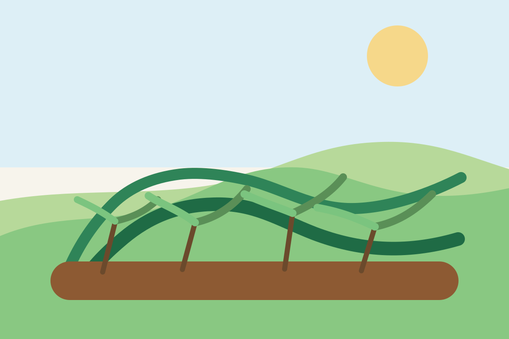

Rau xà lách thủy canh mới cắt buổi sáng
Khối lượng còn khoảng 8kg. Rau cắt sáng, lá gọn, phù hợp cho gia đình hoặc cửa hàng cần nhận trong ngày.
- Giá tham khảo: 38.000đ/kg
- Khu vực: Tây Hồ, Hà Nội
- Liên hệ: 0983.xxx.xxx
Chợ quê là phần mở rộng tự nhiên của hệ sinh thái Ai trồng cây. Đây là nơi người trồng có thể giới thiệu nông sản mình đang có, người mua có thể đăng nhu cầu, và cộng đồng có thể trao đổi hạt giống, vật tư hay kinh nghiệm nhỏ để mùa vụ đi xa hơn.
Chợ quê không cố trở thành một sàn giao dịch lớn. Chúng tôi giữ nó như một nơi kết nối gần gũi, nơi thông tin vừa đủ và cuộc trao đổi đi thẳng vào điều đang cần.
Mỗi tin nên giúp người xem hiểu ngay mình đang đọc một lời rao bán, một nhu cầu tìm mua hay một lời trao đổi vật tư cụ thể.
Khối lượng còn khoảng 8kg. Rau cắt sáng, lá gọn, phù hợp cho gia đình hoặc cửa hàng cần nhận trong ngày.

Tìm nguồn cung đều hằng tuần, ưu tiên húng quế, tía tô, bạc hà và hành lá với chất lượng ổn định.

Một thành viên muốn đổi khay ươm còn đẹp lấy hạt giống và vài vật tư nhỏ cho mùa vụ kế tiếp.
Nêu rõ mình đang có gì hoặc đang cần gì, ở đâu, khi nào và liên hệ bằng cách nào cho thuận tiện nhất.
Nếu chưa quen cách trình bày, anh/chị có thể bắt đầu từ form tư vấn ngắn để được hỗ trợ viết một tin đăng gọn, sáng và đủ ý.
Giá, vận chuyển, hình thức nhận hàng và thời gian giao dịch được hai bên chủ động thống nhất theo điều kiện thực tế.
Đăng đúng, nói thật, phản hồi đúng hẹn và tôn trọng nhau để Chợ quê ngày càng đáng tin hơn.
Mô tả trung thực về sản phẩm, khu vực, chất lượng và thời gian giao dịch.
Hai bên tự trao đổi qua số điện thoại hoặc thông tin liên hệ đã để lại trong tin đăng.
Giá bán, vận chuyển và cách giao nhận do hai bên tự chốt theo nhu cầu thực tế.
Một khu chợ nhỏ chỉ bền khi mọi người đều giữ lời và tôn trọng nhau.
Chợ quê được đặt ở đây để đời sống của thương hiệu gần hơn với gia đình, với mùa vụ và với những trao đổi nhỏ nhưng thật.